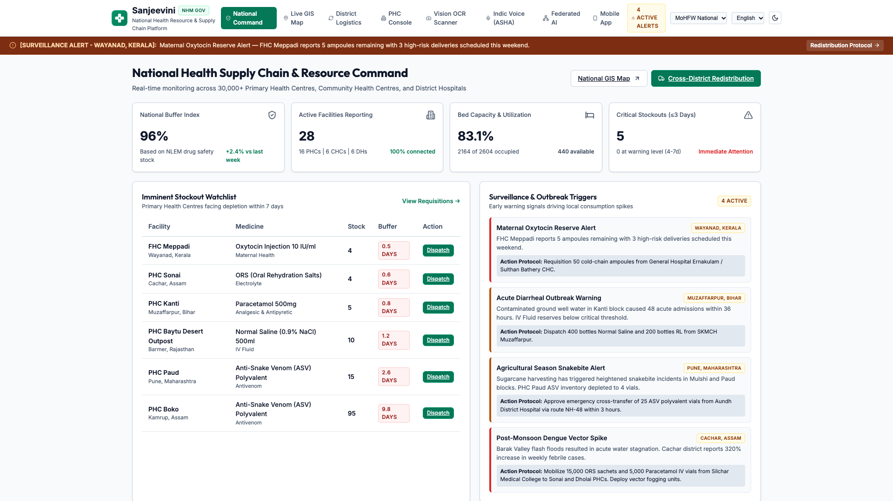
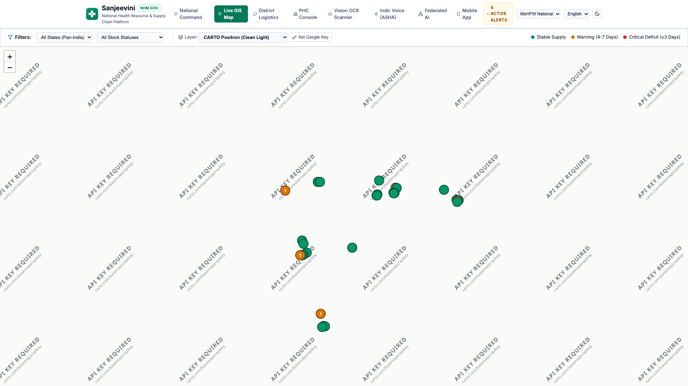
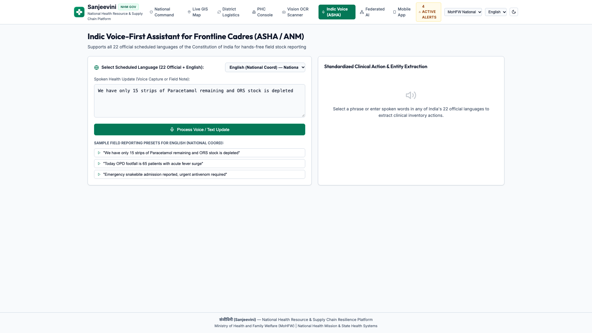
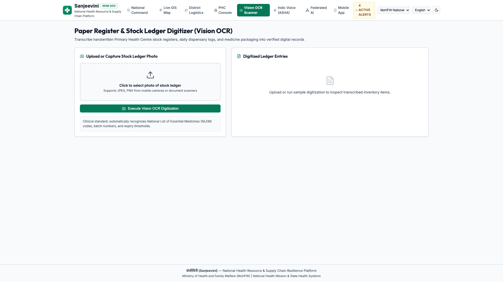
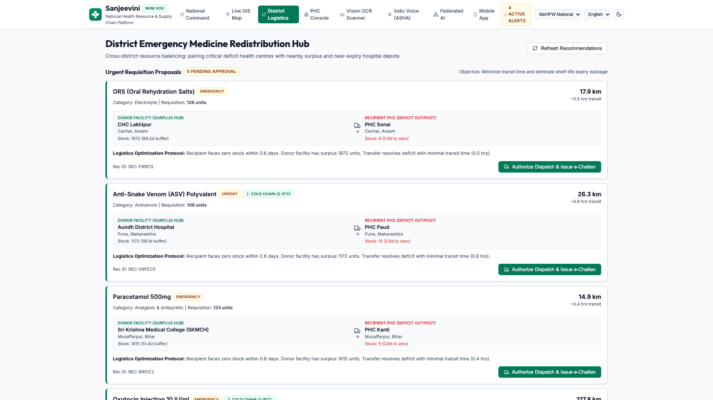
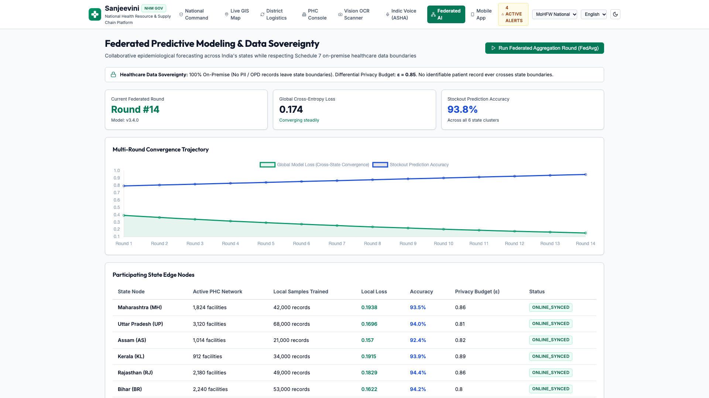
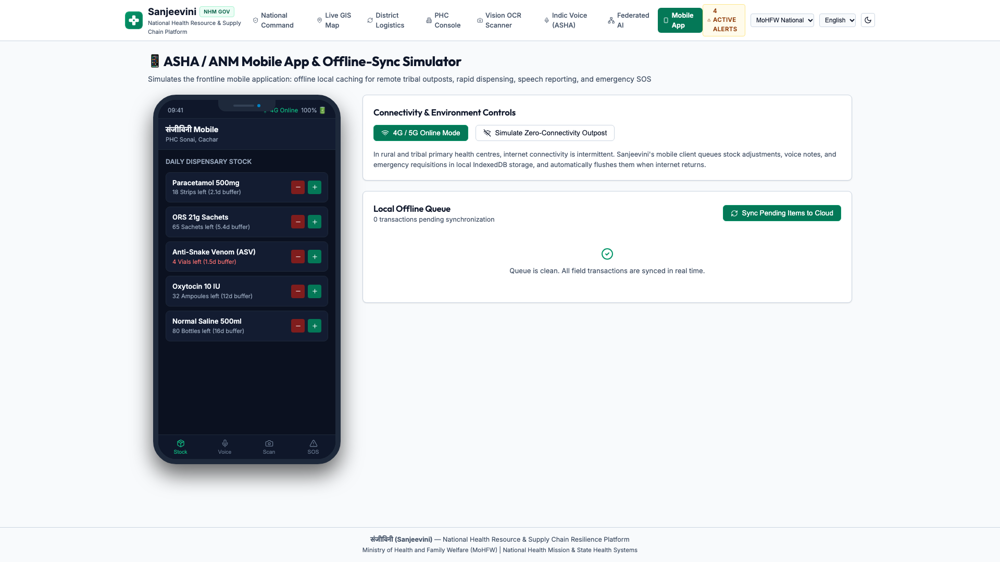

Delivering real-time inventory visibility across India’s 31,000+ Primary Health Centres, predictive demand forecasting, automated cross-district mutual aid redistribution, and sovereign federated intelligence across India’s states.
Zero Automated Surge Warnings: Essential emergency drugs (Paracetamol, ORS, Anti-Snake Venom, Oxytocin) run out during acute seasonal disease surges.
The Proximity Paradox: Excess medicine stockpiles sit expiring in central district warehouses just 40 km away, while rural sub-centres are forced to turn away critical fever and maternal emergencies.
Frontline Cadre Burden: Over 1,000,000 ASHA and ANM healthcare workers lose 2 to 3 hours every day manually compiling paper ledgers instead of delivering patient care.
Latency Blindspots: Legacy batch databases update only once every 24 hours. Critical outbreak signals during monsoons remain hidden until facilities run out completely.
Compliance Constraints: Under India’s Digital Personal Data Protection (DPDP) Act 2023, patient health records cannot be pooled into a monolithic central repository.
Isolated Prediction Models: States cannot share local epidemiological trends or coordinate cross-border emergency replenishment without severe privacy risks.
• Indic Voice AI: Hands-free voice reporting across all 22 official scheduled Indian languages + English.
• Gemini Vision Scanner: Instantly reads medicine packaging, batch barcodes, and handwritten ledgers.
• Zero Typing: Tailored for field workers.
• National Grid: Live tracking across 31,000+ PHCs and Sub-Centres.
• CARTO Positron Engine: High-legibility civic light maps.
• Buffer Thresholds:
🟢 Stable (>7 Days)
🟡 Warning (4–7 Days)
🔴 Critical Deficit (≤3 Days).
• 7-Day Early Warnings: ML forecasts disease surges before stock is exhausted.
• Algorithmic Pairing: Matches donor facilities (>14d buffer) with deficit clinics (≤3d buffer).
• Automated Logistics: Turnkey digital transfer manifests with route guidance.
• Local State Training: State servers train ML models locally behind state firewalls.
• Weight Aggregation (FedAvg): Only mathematical gradients are shared centrally.
• +34.2% Accuracy Boost without centralizing raw citizen records.






